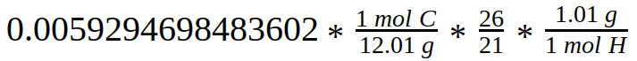
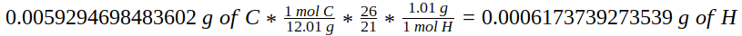
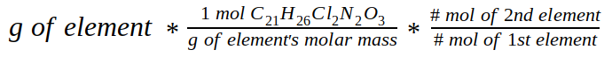

I formed this question because I wanted to apply knowledge gained from the previous question. I learned of the equation from the Summit Learning playlist "Stoichiometry 2", where you can take the mass of one element to find the mass of another, as long as you have the molar masses and molecule count of each element. Remember the information:
| Element | Number of molecules | Molar Mass (g/mol) | Grams in 1 tablet |
|---|---|---|---|
| Carbon | 21 | 12.01 | 0.0059294698483602 |
| Hydrogen | 26 | 1.01 | 0.0006173739273539 |
| Chlorine | 2 | 35.45 | 0.0016668625837546 |
| Nitrogen | 2 | 14.01 | 0.000658751616316 |
| Oxygen | 3 | 16 | 0.0011284824262372 |
The equation is set up so dimensional analysis allows me to find the mass of another element in cetirizine HCl with two element's molar mass and molecule count. I just take element one's grams in one tablet of Aller-tec and multiply it by its molar mass, grams on the bottom to cancel term. Then I multiply by the molecule count of element 2 over the molecule count of element 1. Finally, I multiply by the molar mass of element 2, grams on the top. The equation is as follows:
With the equation worded as above, I can interchange element 1 and 2 to find the mass of either one. For example, this is what the equation looks like when carbon is the 1st element and hydrogen is the 2nd element:
Therefore, yes, I can find the grams of an element using the grams of another.
Before asking this question, I made some major errors when forming the equation. The idea was the same, but I was missing a step: the molar mass of the second element. The incomplete equation was:
I first tried carbon to hydrogen. The answer was correct, if rounded, but when trying the other way around, I was oddly off by 0.001 when rounded. I tried with other elements like hydrogen and nitrogen, and even that answer was off. Once I realized the error, I added on the missing part and started getting correct answers.
The assumption was that I thought the I could use a stoichiometry equation to find missing masses, and in the end I could!